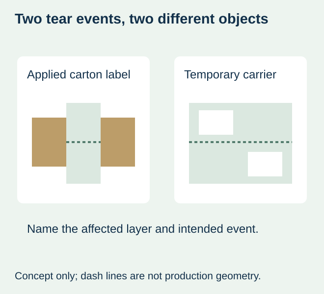
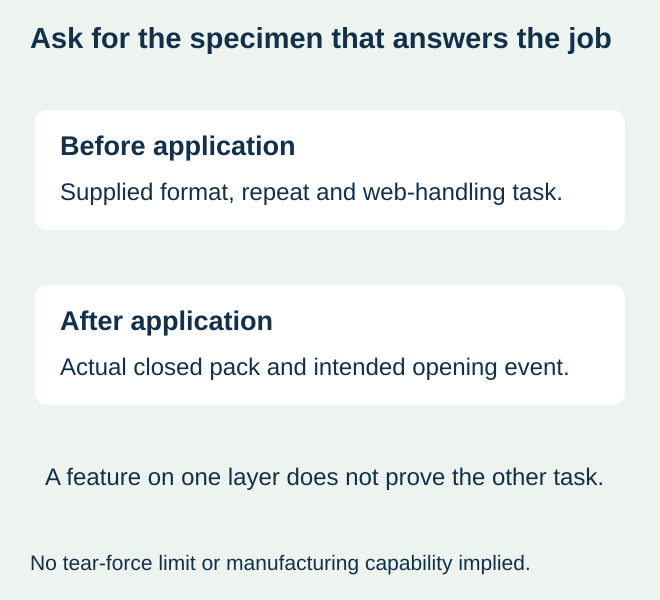

A food-carton proof contains a dashed line marked “perforation.” The brand wants the applied seal to tear at the lid opening. The packer thinks the note means the supplied backing can be separated between groups of labels. Those are different physical features, even if the two drawings look similar on screen.
State the intended tear event and the layer it affects before accepting the feature. A perforation in a label intended to remain on the package is not the same as a separation feature in its temporary carrier. Name the actual proposal, including whether another layer is affected. A printed dashed line alone establishes neither a physical cut nor opening performance.


Start with what happens before and after application
| Intended event | Object to identify | Evidence to request |
|---|---|---|
| Operator separates supplied groups | Backing/web and any other affected layers | Actual supplied repeat and supported handling method |
| Consumer opens an applied carton seal | Retail label at the real package junction | Closed and opened representative package |
| Operator starts peeling a label | Carrier margin, slit or other handling feature | The actual peeling task and supplied construction |
| Web tears unexpectedly on a machine | The failed liner and neighboring complete repeat | Preserved failure evidence, not an assumed design feature |
If the consumer needs an opening aid, inspect it after application on the actual package. If the operator needs to divide supply, inspect the delivered web before application and confirm its handling route. One specimen should not be reported as evidence for both events without showing which layers and operations it actually represents.
Specify the physical feature separately from its graphic cue
HERMA’s combination-label explanation for non-food packaging discusses perforations as one possible opening aid. That external non-food example explains a functional distinction; it does not establish food-contact suitability or a construction offered by this site. Food-package use needs its own actual material and contact review.
On the drawing, identify the finished label boundary, carrier boundary, affected layer and tear-feature location relative to a named edge. Keep artwork cues such as “open here” distinguishable from a physical perforation or slit. Ask the converter to state its actual manufacturing-file convention and feasible construction rather than assume every dashed drawing line becomes a cut.


Keep the repeat and machine interface visible
For supplied strips or continuous web, show where the feature lies within the actual repeat. A cross-web separation line between label groups changes a different part of the supply from a feature inside an individual retail label. Identify the number of labels or groups represented, without inventing a universal tear pitch.
Where a printer, dispenser or applicator handles the web, the equipment owner must confirm the proposed construction and feature. A backing that separates easily by hand does not automatically provide the integrity required along the machine path. Do not add a feature simply because a sample can be torn on a desk.
The liner-damage guide concerns unintended breaks. Keep any deliberate feature explicitly identified so the later inspection does not confuse it with damage. Conversely, an unapproved repeated break should not be reclassified as an intentional perforation to close a complaint.
Balance opening convenience with ordinary handling
For a hypothetical bakery-box closure, the intended tear may need to be understandable when the customer opens the lid while remaining acceptable through packing and delivery. Compare the actual closed package and relevant handling, then the intended opening. No tear force, retention percentage or feature spacing is supplied here; those requirements need the converter and package owner’s supported proposal.
If a feature tears during normal handling, review that observation against the agreed requirement. If it remains intact during the intended opening, review the feature and placement rather than declare the artwork sufficient. A useful opening aid does not establish food safety, coverage of every access route or a tamper-proof claim.
Release the feature with its actual purpose
Retain an identified supplied sample and an applied package where each is needed. Record what was approved for supply separation, application and consumer opening separately. When the shape, carrier or supply format changes, ask which evidence still represents the new proposal.
Use the manual-peeling guide when the unresolved task is starting label removal from a backing, and the roll-end guide when the issue is loading web. The purchasing result here is an unambiguous intended tear feature on a named layer. Availability, tooling, quantities and any claimed behaviour require confirmation for the project.
Discuss the unresolved label requirement
Send readable face and explicitly labelled backing views, the intended tear line, actual package opening or separation task, construction, delivered format and quantity. Include the equipment owner’s restrictions before requesting any perforated web. Review the food-label product scope and prepare a label specification inquiry. The contact page opens an email draft and lists email or WhatsApp for attachments. Supply, proof options, testing, pricing and timing require project confirmation.